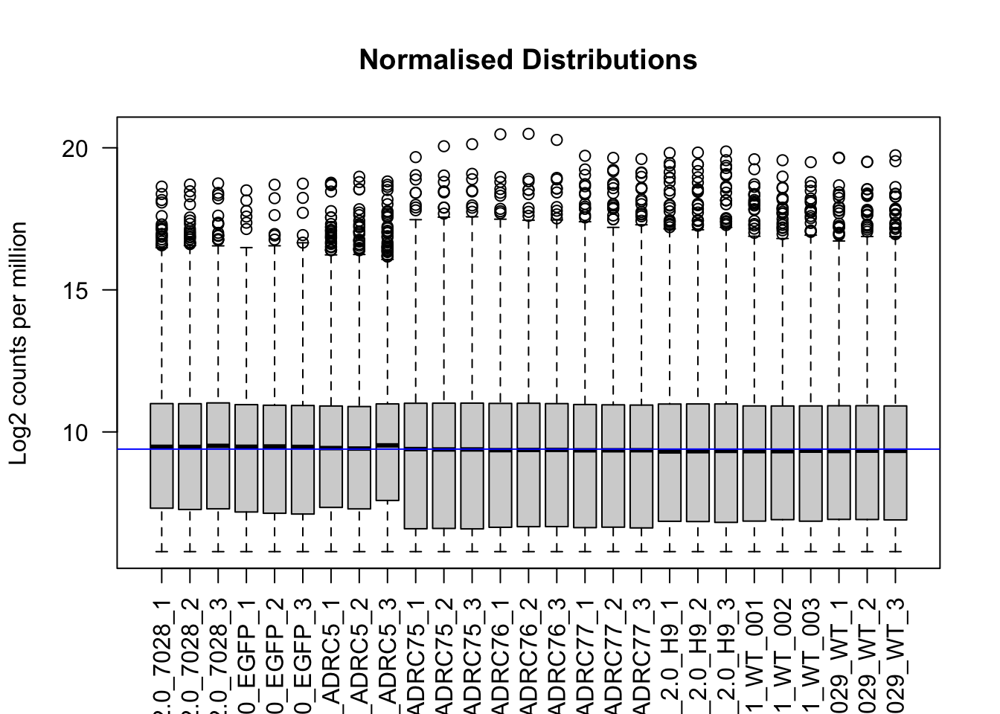
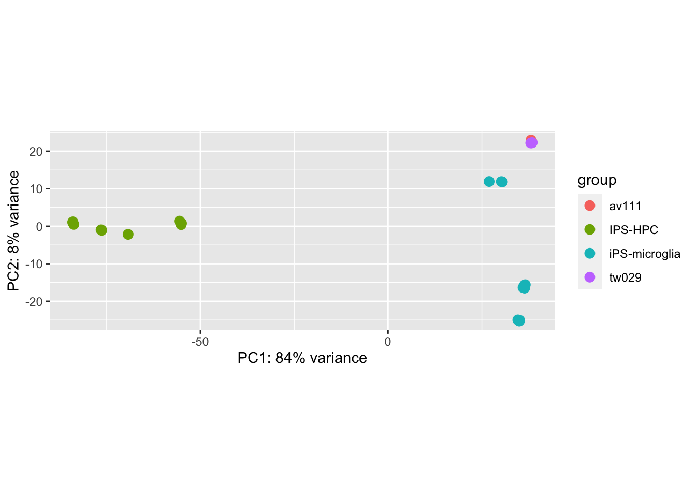
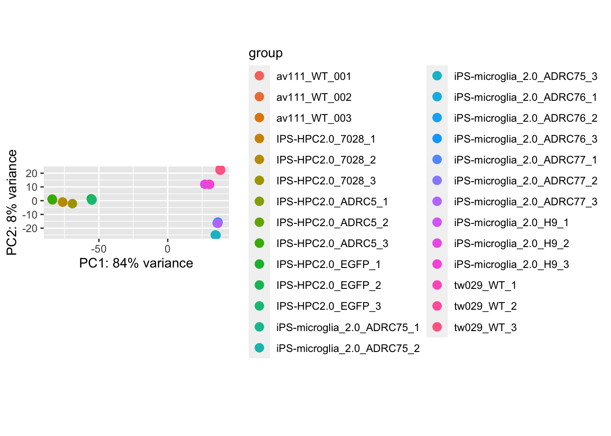
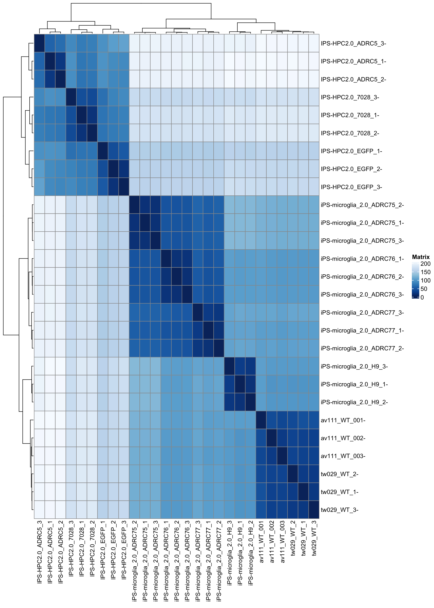

comparison_iPSC
Alicia Pliego
3/17/2022
Differential expression analysis using DESeq2
Comparison of av111 and tw029 with McQuade et al., 2018 GSE117829
Samples to compare in the Differential Analysis
Excluding sample tw047 from the analysis, a Differential expression analysis was performed:




Differential expression analysis using DESeq2
Comparison of av111 and tw029 with McQuade et al., 2018 GSE117829 and Chen et al 2021
Samples to compare in the Differential Analysis
Excluding sample tw047 from the analysis, a Differential expression analysis was performed: